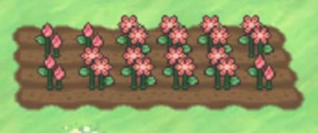

Gracidea Farming
Gracidea Farming

Requirements:
- To farm Gracidea in one account you need x468 Gracidea.
- Need to complete Unova including the Elite Four to unlock Abundant Shrine.
Infos:
- Gracidea is 44 hours flower.
- You need x3 Gracidea to plant a seed.
- You will plant the seed across 156 plots in Unova (72 plots in Mistralton and 84 plots in Abundant Shrine).
- You have to water after you plant the seed.
- You have to water every 12 hours.
- You get x1.45 Gracidea per harvest runs.
- You will have chance to get random nature herbs.
Results:
- You'll get around x675 Gracidea.
- You'll get around x7-8 random nature herbs.